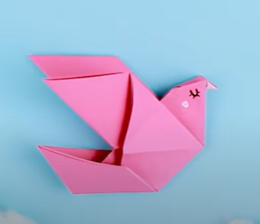

Origami Designs

bird
- Birds have feathers, wings, lay eggs and are warm blooded.
- There are around 10000 different species of birds worldwide.
- Scientists believe that birds evolved from theropod dinosaurs.

cat
- The hearing of the average cat is at least five times keener than that of a human adult.
- Cats can rotate their ears 180 degrees.
- Cats have been shown to help people get over their loss more quickly, and show less physical symptoms of pain, like crying.

elephant
- They're the world's largest land animal.
- You can tell the two species apart by their ears.
- Despite their great size, elephants are known to be gentle creatures.
fox
- Although red foxes are part of the Canidae family along with dogs, they have more in common with cats.
- By far the most common and widespread species of fox is the red fox.
- Foxes live on every continent except Antarctica.
panda
- Like domestic cats, giant pandas have vertical slits for pupils.
- At 5 months old, giant pandas learn how to climb - sometimes practicing by climbing on their mum.
- Giant pandas spend 10-16 hours a day feeding, mainly on bamboo. .